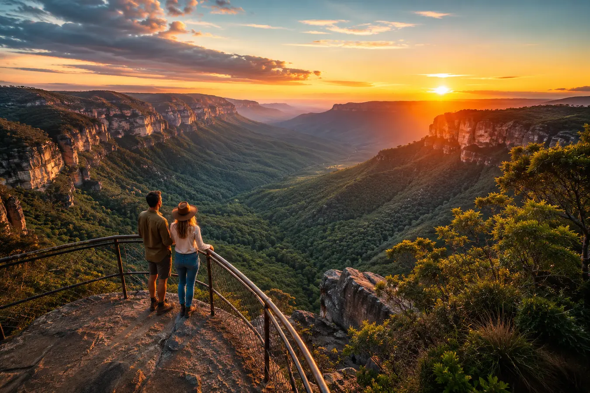

TOURISM WEBSITE DESIGN
Visitor Attraction Website Design for Regional NSW
Modern tourism websites for visitor attractions, tourism experiences and regional destinations — built to improve Google visibility, mobile tourism discovery and visitor enquiries across regional NSW.
Built for tourism businesses that rely on Google searches, Maps visibility and mobile travellers planning trips across regional NSW.

TOURISM SEO
Why Tourism SEO Matters for Visitor Attractions
Travellers search Google before they visit. A fast, modern and mobile-friendly tourism website helps visitor attractions appear in search results, Google Maps and tourism discovery searches across regional NSW.
Google Visibility
Tourism websites structured to improve visibility in Google search results for regional attractions, tourism experiences and local destinations.
Mobile Tourism Searches
Most travellers discover attractions, experiences and things to do using mobile devices while planning trips or travelling.
Google Maps Discovery
Better tourism websites support stronger Google Maps visibility, helping visitors find attractions and regional experiences more easily.
Tourism Branding
Strong imagery, clean layouts and modern design help attractions appear more professional, trustworthy and visually engaging online.
Fast Mobile Performance
Fast-loading websites improve user experience for travellers using mobile data while also supporting stronger SEO performance.
Regional NSW Focus
Built specifically for regional tourism businesses and attractions looking to attract more local and travelling visitors online.
FEATURES
Built for Regional Tourism Businesses
Modern tourism websites designed to improve enquiries, Google visibility and mobile tourism experience for visitor attractions across regional NSW.
Built for Google
SEO-focused website structure designed to improve tourism visibility in Google search results and regional tourism searches.
Mobile-Friendly
Designed for travellers researching attractions, experiences and things to do using phones and tablets while travelling.
Google Maps Integration
Help travellers find your attraction quickly through Google Maps, local discovery and tourism-related searches.
Fast Performance
Fast-loading tourism websites improve user experience, mobile usability and overall SEO performance.
Tourism Branding
Premium layouts, strong imagery and modern design help attractions appear more professional and visually engaging.
Enquiry Focused
Encourage more tourism enquiries, visitor engagement and attraction discovery through a clearer online experience.
REGIONAL NSW
Supporting Regional Tourism Businesses Across NSW
Crane Platform Labs works with tourism businesses, visitor attractions and regional destinations across NSW — helping attractions improve Google visibility, tourism discovery and mobile visitor experience.
From tourism attractions and museums to local experiences and visitor destinations, we build modern tourism websites designed to support regional tourism growth across NSW.
FAQ
Visitor Attraction Website Questions
Common questions about tourism websites, Google visibility and attracting more visitors online across regional NSW.
Tourism businesses rely heavily on Google visibility, strong mobile usability and clear visitor information to help travellers discover attractions, museums, wineries and tourism experiences online before visiting.
How do tourists discover attractions online?
Most travellers use Google, Google Maps and mobile searches to discover tourism attractions, local experiences and things to do while planning trips or travelling.
Why is Google Maps important for tourism businesses?
Google Maps visibility helps travellers find attractions, directions, opening hours and tourism experiences quickly while exploring regional areas.
Can a better website increase tourism visitors?
A modern tourism website improves trust, branding and visitor engagement while helping attractions appear more professional and easier to discover online.
Why do outdated tourism websites lose visitors?
Slow loading speeds, poor mobile usability, outdated layouts and confusing information can reduce trust and cause visitors to leave quickly.
Do regional attractions need SEO?
Regional tourism businesses compete online just like metro businesses. SEO helps attractions appear in tourism searches and improve visitor discovery.
Why is mobile-friendly design important for tourism websites?
Most tourism traffic now comes from mobile devices. A mobile-friendly website helps travellers browse attractions easily while on the move.
Can tourism websites help improve enquiries?
Clear layouts, strong calls-to-action and better tourism branding can encourage more enquiries, bookings and visitor engagement online.
Why does website speed matter for tourism businesses?
Faster websites improve user experience, support SEO performance and help mobile travellers access information quickly while travelling.
GET STARTED
Improve Your Attraction's Online Presence
Professional tourism websites built to improve Google visibility, mobile tourism discovery and visitor enquiries across regional NSW.
Built for visitor attractions, tourism experiences, local destinations and regional tourism businesses wanting a stronger online presence.